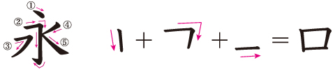

5 書き方と画数の数え方
5.1 漢字の書き方の基本ルール：「上から下へ、左から右へ」
今も書道で行われているように、文字は昔、筆に墨をつけて紙に書いていました。墨は液体ですから、重力に従って下に垂れていきます。それで、字は上から下に書くのが書き方の第一の基本です。そして、字は右手で書く人が多いので、右利きの人に書きやすいような方向に書くようになっています。つまり、横の線は左から右に書くのが第二の基本です。斜めの線は次の「永」の字の④や⑤のように右から左、左から右、両方あります。これを「払い」と言います。②の最後のところは「はね」と言います。1画の終わり方は、はねるものと、はらうものと、止めるものがあります。止めるものは例えば「木」の縦の線です。

「口」の画数は3画です。書く時に、筆やペンが紙に一度ついてから離れるまでを1画とするのが基本です。「永」の字は5画です。
5.2 筆順の原則
漢字の筆順（書き順）には、次のような原則があります。
・上から下へ（上・三）
・左から右へ（川・街）
・横が先、縦が後（十・先、例外：田・曲）
・まん中、左、右の順（小・水、例外：火・快）
・構は外側から（風・同）、「くにがまえ」の閉じる画は最後（国・因）
・払いは左、右の順（人・来）
・貫く線は縦も横も最後（中・与、例外：世）
・交差する横画と左払いは、長い方が先（はらいが先：右・有、横が先：左・友）
・しんにょう・えんにょうは後、他のにょうは先（後：道・延、先：起・魅）
本書の本文の漢字で使っている教科書体は「游教科書体」という、書き順が推測しやすい形のものを使っています。例えば、漢字番号144「原」と146「成」のそれぞれの漢字の左上の部分を比べてみてください。接している横線と左払いは「原」では横が先、「成」では左払いが先であるという違いが推測できます。